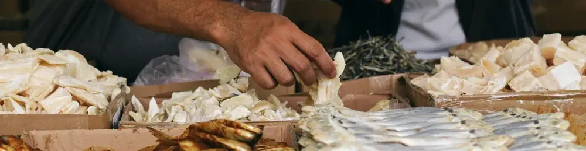

Kenapa Ikan Asin Bisa Awet Pada Suhu Ruang?

Kalau sedang berkunjung ke kampung, hidangan ini seringkali kita nikmatin. Apalagi kalau bukan ikan asin goreng kering, dipadu dengan nasi hangat, sambal tomat segar, tempe goreng atau telur ceplok, serta lalapan yang melimpah. Lebih nikmat lagi, kalau itu semua dinikmati sambil menatap hijaunya sawah sembari diiringi suara gemericik air dan kicauan burung. Ah, damai sekali ya, menikmati makan siang dengan suasana seperti itu.
Jenis-Jenis Ikan Asin dan Hasil Olahan
Ikan asin biasanya memang sering ada di dapur-dapur di kampung. Jenisnya ada berbagai macam, mulai dari teri asin yang biasa digunakan untuk campuran sambal dan nasi goreng, hingga ikan asin dengan ukuran yang lebih besar yang biasa digoreng kering dan dimakan dengan sambal segar. Kondisi ikan yang sudah asin ini menjadikannya awet dalam waktu lama tanpa perlu disimpan di dalam kulkas.
Proses Pengasinan Ikan
Lantas, bagaimanakah hubungan proses pengasinan pada ikan dengan kemampuannya untuk awet di suhu ruang? Setelah ditangkap dari laut, ikan ini biasanya dikeringkan terlebih dahulu. Salah satunya, bisa dengan cara dijemur dibawah terik matahari. Hal ini berfungsi untuk mengurangi kadar air.
Setelahnya, ikan yang sudah kering tersebut, tentunya akan menjadi asin. Hal ini disebabkan oleh kadar air ikan yang berkurang, namun kadar garam tidak berkurang. Garam pun bisa ditambahkan pada ikan, untuk menambah tingkat keasinan.
Penyebab Keawetan Ikan Asin
Dalam hal pengawetan makanan, garam ini berfungsi untuk mengurangi konsentrasi cairan pada bakteri, melalui proses osmosis. Artinya, cairan yang seharusnya ada di dalam sel bakteri, akan tertarik oleh garam. Sehingga, bakteri kekurangan cairan dan tidak dapat berkembang.
Dengan kata lain, mengurangi kadar air pada ikan adalah proses penting yang bisa kita lakukan untuk meningkatkan keawetannya karena bakteri membutuhkan kadar air yang cukup untuk bertahan hidup dan berkembang biak. Oleh mengapa, mengurangi kadar air pada ikan adalah cara yang efektif untuk meningkatkan masa simpan ikan tersebut. Hal ini dilakukan melalui proses pengeringan, termasuk penjemuran, serta proses pengasinan
Mudahnya Mengawetkan Makanan dengan Garam
Dibalik kelezatan dan kehadiran ikan asin di dapur-dapur tradisional, ternyata olahan makanan ini hadir sebagai bentuk proses panjang pengawetan makanan secara alami, ya. Proses pengawetan hasil tangkapan laut menjadi ikan asin dapat dilakukan oleh siapa saja, karena menggunakan teknologi yang dapat dijangkau oleh sebagian besar kalangan masyarakat. Hasilnya, tentu saja, ikan asin yang siap untuk menemani hidangan di dapur-dapur keluarga, setiap saat.
Video singkat tentang pengawetan pada ikan asin dapat dilihat dibawah ini. Semoga bermanfaat, ya!